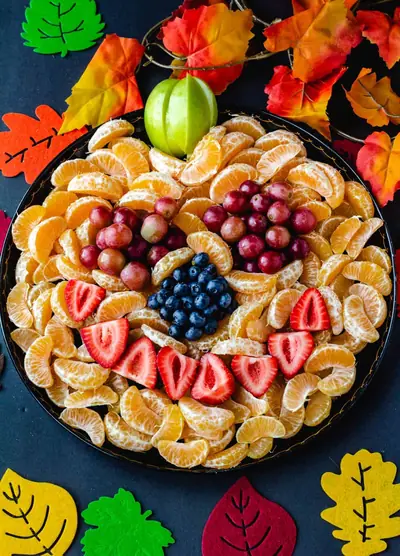

Halloween Fruit Tray

Ingredients
- 12 clementines (peeled and separated)
- 1 cup red grapes (washed and picked off the vine)
- 1/4 cup blueberries
- 4 strawberries (halved)
- 4 slices granny smith apple
Steps
- Peel clementines and separate them into wedges. Cover tray completely with wedges.
- Slice strawberries in half. Arrange into a smile.
- Place washed blueberries into the center. Arrange into a circle or triangle for the nose.
- Wash grapes. Arrange into two equal circles to make the eyes.
- Slice green apple into wedges. Arrange at the top to create the pumpkin stem.
Recipe by Anjali Shah · The Picky Eater, from The Picky Eater. Saved here for personal use; the original has the full notes, tips and photos. Open original